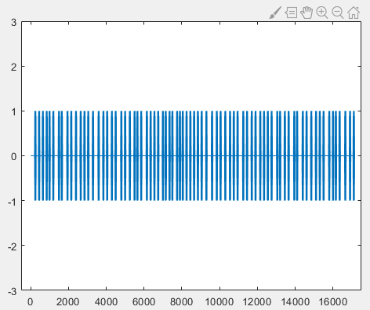
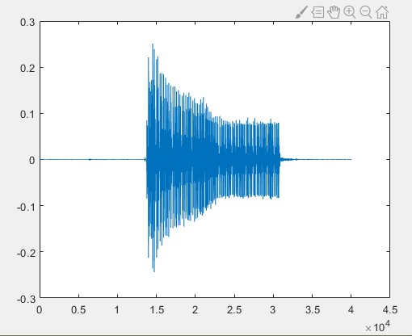
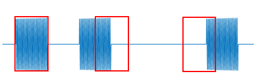
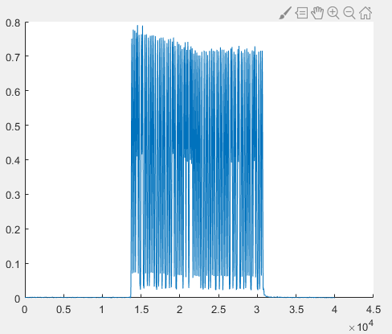
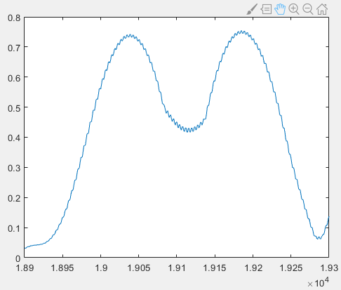
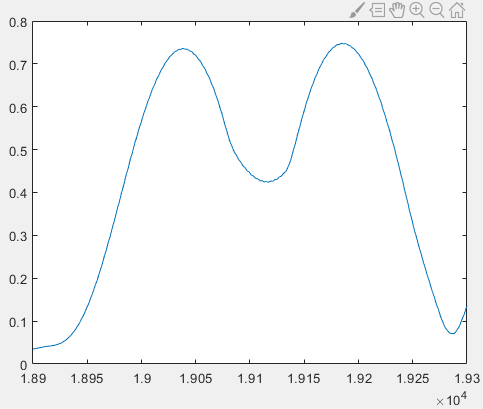
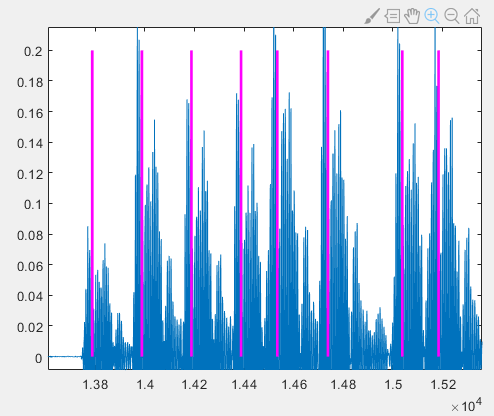
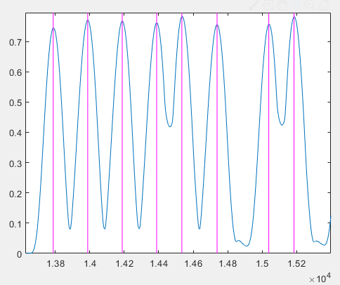
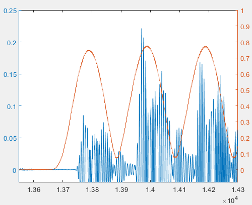
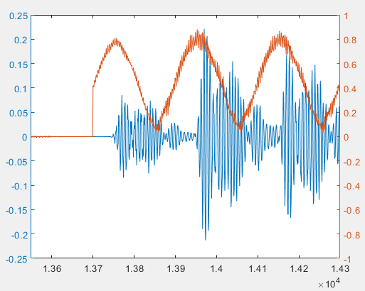

Implementation of a Relatively Complete Communication System
This section takes pulse interval modulation as an example to implement a simple wireless communication system at the code level. Specifically, the system includes a transmitter and a receiver. The input of the transmitter is a piece of text information, and the output is an audio file as the modulated signal. We play this audio file using a mobile phone or a computer, and then use another device to receive it. The input of the receiver is the recorded audio file, that is, the received signal, and the output is a piece of text information.
Through the implementation below, readers can personally experience the signal transmission process in a real environment and understand: - the basic steps in practical transmission, - and the various problems brought to wireless communication by real environments. In much of the frontier research and many papers on IoT communication, in fact, most of the time we are dealing with problems arising from various real-world scenarios. For example: - how to detect when data transmission starts, - how to filter interference noise in the received signal, - how to handle distortion of speakers and microphones, - how to handle frequency offsets between the transmitting device and the receiving device (which are especially common and severe in IoT devices, particularly low-cost IoT devices).
Encoding
We first need to convert the input text information into a binary sequence before modulation. We can map each character in the text to 8 bits according to ASCII encoding and concatenate them in order. For this purpose, we implement a function named string2bin:
function [ binary ] = string2bin( str )
% Convert a string into a binary sequence
ascii = abs(str);
L = length(ascii);
binary = zeros(L,8);
for i=1:L
binary_str = dec2bin(ascii(i));
binary_str_index = length(binary_str);
for j = 8:-1:1
if binary_str_index >0
binary(i,j) = str2num(binary_str(binary_str_index));
else
binary(i,j) = 0;
end
binary_str_index = binary_str_index-1;
end
end
binary = reshape(binary',[L*8,1]);
end
We use acoustic signals for communication. The sampling frequency is 48 kHz. Since most people cannot hear sounds above 17 kHz, and do not produce sounds above 17 kHz, in our method we let the device transmit an 18 kHz acoustic signal. In this way, the transmission will not disturb other people, and the signal can also avoid interference from human speech. We choose the pulse length to be 100 sampling points. Since the sampling frequency is 48 kHz, the pulse duration is \(100/48000 \approx 2.1\text{ ms}\).
The correspondence between the number of sampling points of the pulse interval and the encoding rule is shown in the table below:
| Pulse interval (samples) | Code |
|---|---|
| 50 | 00 |
| 100 | 01 |
| 150 | 10 |
| 200 | 11 |
Modulation
With the encoding rule defined, we can generate the signal according to the input text.
First, we generate the acoustic signal. In pulse interval modulation, we need to generate a pulse signal with a fixed frequency (18 kHz) and a fixed length (100 sampling points):
%%
fs = 48000; % set sampling frequency
f = 18000; % specify sound signal frequency
time = 0.0025; % specify duration of generated signal
t = 0:1/fs:time; % time corresponding to each sample
t = t(1:100); % extract 100 sampling points
impulse = sin(2*pi*f*t); % generate sinusoidal signal with frequency f
Next, we generate the silent segments used for encoding:
delta = 50;
pause0 = zeros(1,delta); % encode 00
pause1 = zeros(1,2*delta); % encode 01
pause2 = zeros(1,3*delta); % encode 10
pause3 = zeros(1,4*delta); % encode 11
Set the string to be transmitted:
str = 'Tsinghua University';
When calling the string2bin function with the previously set string to be transmitted, we can obtain the binary sequence to be transmitted and store it in the variable message:
message = string2bin( str )'; % convert string to binary sequence
% since each symbol represents 2 bits, convert the binary sequence to a quaternary sequence
[~,m_Length] = size(message);
message4 = [];
for i = 1:m_Length/2
% combine every two bits into one quaternary symbol
message4 = [message4,message(i*2-1)*2+message(i*2)];
end
Generate the encoded data:
output = [];
% according to the value in the quaternary sequence, add impulse and the corresponding silence to the output signal
for i = 1:m_Length/2
if message4(i)==0
output = [output,impulse,pause0];
elseif message4(i)==1
output = [output,impulse,pause1];
elseif message4(i)==2
output = [output,impulse,pause2];
else
output = [output,impulse,pause3];
end
end
% add a silent segment at the beginning of the output signal to avoid distortion when playback starts
output = [pause3,output,impulse];
% plot the output time-domain signal
figure(1);
plot(output);
axis([-500 17500 -3 3]);
% write the output signal into an audio file, specifying file name, data, and sampling frequency
audiowrite('message.wav',output,fs);
This involves an issue related to speaker playback. Some speakers experience a cold-start process when first powered on, which leads to distortion of the sound played at the beginning. We can add a silent segment at the beginning of the audio signal to skip this cold-start period.
The final generated output signal in the time domain is shown in the figure below, where the horizontal axis represents the sample index and the vertical axis represents the amplitude:

After obtaining the modulated audio file, we store the file on an Android phone and play it using a sound player. At the same time, we use another device to record the acoustic signal and store it in the recording file r.wav. Since the modulation method demonstrated here is simple, data recorded from a single channel is sufficient for decoding, so we use single-channel recording.
Demodulation
The following demodulation and decoding parts are written in the script decoding.m. We use MATLAB to read the recording file r.wav and display the data:
%% read data from the recording file
[data, fs] = audioread('r.wav');
figure(1);
plot(data);
hold on;

From the figure above, it can be seen that after speaker playback, air propagation, and microphone reception, the acoustic signal differs from the untransmitted signal, corresponding to various kinds of noise introduced during transmission.
Before demodulation, let us review the principle of pulse interval modulation. Since pulse interval modulation uses the length of the interval between pulses to encode data, the key to demodulation lies in obtaining the interval between every two adjacent pulses and converting it into the corresponding binary data. To obtain the interval between pulses, we need to know the start and end time of each pulse. Since the length of each pulse is fixed, we only need to know the start position of each pulse.
How can we find the start position of each pulse? In this example, we use an energy intensity threshold method.
With the help of the Fourier transform, we can obtain the intensity of a certain frequency component in a segment of time-domain signal. By applying the Fourier transform to segmented time-domain signals, the intensity of the 18 kHz component in each segment can be calculated. Since the pulse length is designed to be 100 sampling points, when the Fourier transform window length is set to 100, only when the window starts exactly at the pulse start position will the entire window be filled with the 18 kHz signal. If the window does not start at the pulse start, the window will inevitably contain part of the silent segment (where there is no sound and the sampled values are close to zero). According to the principle of the Fourier transform, the energy at a certain frequency in the frequency domain is the accumulation of the corresponding frequency energy in the time domain. Therefore, when the window aligns with the pulse start, the energy at 18 kHz obtained by the Fourier transform is the highest. We can record the energy of 18 kHz for each time-domain window and determine the start position of each pulse by finding the local maxima.

Next, we perform demodulation. First, we filter the signal to remove environmental noise and keep only the 18 kHz sound signal used for modulation:
%% filter the recorded data
% define a band-pass filter
hd = design(fdesign.bandpass('N,F3dB1,F3dB2',6,17500,18500,fs),'butter');
% filter the data
data = filter(hd,data);
Thinking: In fact, in pulse interval modulation, filtering is not strictly necessary. Do you know why?
Next, we apply sliding-window Fourier transform to the recorded signal to obtain the intensity of the 18 kHz component in each segment:
%% sliding-window Fourier transform to obtain 18 kHz energy
f = 18000; % target frequency
[n,~] = size(data); % data length
window = 100; % window size
impulse_fft = zeros(n,1);
for i= 1:1:n-window
y = fft(data(i:i+window-1));
y = abs(y);
index_impulse = round(f/fs*window);
impulse_fft(i)=max(y(index_impulse-2:index_impulse+2));
end
figure(2);
plot(impulse_fft);

Zooming in locally, we can observe a sawtooth-shaped curve:

Our goal is to find the local maxima accurately to determine the start position of each pulse. However, the maximum of the sawtooth-shaped curve may not strictly appear at the center of the pulse peak. Therefore, we apply moving average filtering to smooth impulse_fft. Here we use a window size of 11:
% moving average (mean filter)
sliding_window = 5;
impulse_fft_tmp = impulse_fft;
for i = 1+sliding_window:1:n-sliding_window
impulse_fft_tmp(i)=mean(impulse_fft(i-sliding_window:i+sliding_window));
end
impulse_fft = impulse_fft_tmp;
figure(2);
plot(impulse_fft);
hold on;

Since in practice we cannot guarantee that the smoothed signal is monotonic on both sides of the peak, we use local maxima instead of global maxima. We again use a window of length 100, centered at the current point. If the center point is the maximum in the window, then it is regarded as a peak. To eliminate interference from fluctuations in silent segments, we also apply a threshold on the peak height. When the value is less than or equal to 0.3, it is not considered a peak regardless of the curve shape.
% extract pulse start positions (center of peaks)
position_impulse=[];
half_window = 50;
for i= half_window+1:1:n-half_window
if impulse_fft(i)>0.3 && impulse_fft(i)==max(impulse_fft(i-half_window:i+half_window))
position_impulse=[position_impulse,i];
end
end
According to the above analysis, the peak positions correspond to the pulse start positions. To verify this conclusion, we plot the detected peak positions on the time-domain signal and compute the intervals between adjacent pulses:
%% mark pulse start positions and compute intervals
[~,N]= size(position_impulse);
delta_impulse=zeros(1,N-1);
for i = 1:N-1
figure(2);
plot([position_impulse(i),position_impulse(i)],[0,0.8],'m');
figure(1);
plot([position_impulse(i),position_impulse(i)],[0,0.2],'m','linewidth',2);
delta_impulse(i) = position_impulse(i+1) - position_impulse(i) -100;
end
It can be observed that the magenta lines representing the detected pulse start positions do not exactly coincide with the true pulse start positions in the time-domain signal; a short segment of signal exists before the magenta line.

However, these magenta lines correspond well to the peaks in the 18 kHz energy plot:

That is, the peaks in the 18 kHz energy plot do not appear at the actual pulse start positions. This seems inconsistent with our initial theoretical analysis. To explain this phenomenon, we plot the original time-domain signal and the 18 kHz energy plot together:
We find that the peaks of the 18 kHz energy do not appear at the signal start positions. This phenomenon is caused by filtering. If we replace the original signal with the filtered signal, we will find that the beginning and end of each pulse are weaker than the middle part. This filter characteristic, combined with multipath echo effects, causes the maximum of the sliding-window FFT to not appear at the pulse start position.

If we do not filter the signal and directly apply sliding-window FFT to the original audio data, the result is shown below. We can see that the peak of the 18 kHz energy appears at the pulse start position. However, because filtering is not applied, the frequency components in the original signal are more mixed, making the 18 kHz energy curve more fluctuating.

Although the peak positions obtained using filtered and unfiltered data are different, both methods can successfully decode the data. This is because decoding relies on the interval between adjacent pulses. Even if the absolute positions of detected pulses are shifted, as long as all pulse positions are shifted by approximately the same number of samples, the intervals remain nearly unchanged. When designing the encoding, as long as the differences between the intervals for different symbols are sufficiently large, decoding accuracy can be ensured.
Decoding
Next, we decode using the intervals between adjacent pulses. According to the encoding rule, different interval lengths are mapped to different symbols. Due to noise and other factors, the measured intervals will not be exactly equal to the designed values. Therefore, robustness must be introduced in decoding. In this experiment, we assume that if the difference between the measured interval and the designed value is less than 10, it is decoded as the corresponding symbol; otherwise, decoding fails. The threshold can be adjusted according to the actual channel and signal conditions.
%% decoding
decode_message4 = zeros(1,N-1)-1;
for i = 1:N-1
if delta_impulse(i) - 50 >-10 &&delta_impulse(i) - 50 <10
decode_message4(i) = 0;
elseif delta_impulse(i) - 100 >-10 &&delta_impulse(i) - 100 <10
decode_message4(i) = 1;
elseif delta_impulse(i) - 150 >-10 &&delta_impulse(i) - 150 <10
decode_message4(i) = 2;
elseif delta_impulse(i) - 200 >-10 &&delta_impulse(i) - 200 <10
decode_message4(i) = 3;
end
end
% convert quaternary symbols to binary
decode_message = zeros(1,(N-1)*2)-1;
for i = 1:N-1
if decode_message4(i) == 0
decode_message(i*2-1)=0;
decode_message(i*2)=0;
elseif decode_message4(i) == 1
decode_message(i*2-1)=0;
decode_message(i*2)=1;
elseif decode_message4(i) == 2
decode_message(i*2-1)=1;
decode_message(i*2)=0;
elseif decode_message4(i) == 3
decode_message(i*2-1)=1;
decode_message(i*2)=1;
end
end
Now we have decoded the binary sequence from the acoustic signal. To convert it into readable information, we need to transform the binary sequence into a string. We implement a function bin2string corresponding to string2bin:
function [ str ] = bin2string( binary )
% convert binary sequence to string
L = length(binary);
str = [];
binary = reshape(binary',[8,L/8]);
binary = binary';
for i=1:L/8
s= 0;
for j = 1:8
s = s+2^(8-j)*binary(i,j);
end
str = [str,char(s)];
end
end
Finally, call bin2string:
% decode binary data to string according to ASCII
str = bin2string(decode_message)
Running the entire script yields:
>> decoding
str =
'Tsinghua University'
Thus, a simple wireless transmission system is completed.
Thinking
- Is the energy intensity threshold method applicable to other modulation schemes? If strong interference exists in the environment and regions of high energy are likely to be noise, how should the signal start position be detected?
- In pulse interval modulation, if one pulse is missed due to noise, all subsequent pulses will be misaligned, causing the decoded binary sequence to be out of alignment from that point onward. How can the impact of this situation be reduced?
- Here pulse modulation is used. Can the modulation method be replaced with BPSK, QPSK, 8PSK, OQPSK, 64QAM, or OFDM that we have learned before?